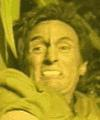

Jossen |
|
||||
|  |
Agente segreto
vulcaniano alterato chirurgicamente per infiltrarsi in una fazione
criminale della società
agaroniana. Al termine della sua missione su Agaron,
non ubbidisce all'ordine di rientrare su
Vulcano, si nasconde per un certo
periodo su Risa, su cui viene ucciso da
T'Pol per aver reagito al tentativo di cattura nel
2135.